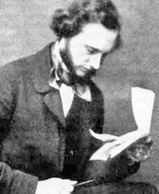

Provocarea 6-1
Provocarea 6-1
Cât este, exprimată în °C, temperatura 0°F?
Elemente de termodinamică. |
Noţiuni termodinamice de bază |
Alegerea valorii zero pentru temperatura la care gheaţa se topeşte (la presiune atmosferică normală), este convenţională.
Înaintea lui Celsius, germanul Daniel Fahrenheit a atribuit valoarea 32 pentru temperatura de topire a gheţii şi 212 pentru cea de fierbere a apei. Gradul Fahrenheit - notat °F - este, aşadar, a 180−a parte din intervalul de temperatură corespunzător topirii gheţii şi fierberii apei. Această scară termometrică - scara Fahrenheit - este utilizată şi astăzi în ţările în care se vorbeşte limba engleză (cu excepţia Marii Britanii, care a adoptat scara Celsius).
Fahrenheit a făcut această alegere astfel încât 0°F să corespundă celei mai coborâte temperaturi pe care o putea obţine în laboratorul său.
Provocarea 6-1
Cât este, exprimată în °C, temperatura 0°F?
|  | Figura 6-2. William Thomson - lord Kelvin (1824−1907) |
În această scară nu există temperaturi negative, astfel că temperatura este absolută.
Unitatea de măsură pe scara absolută de temperatură este kelvinul, simbol K. Temperatura 0 K (zero absolut) corespunde valorii -273,15°C.
Pentru a păstra o corespondenţă simplă cu scara Celsius, o variaţie de temperatură de un kelvin a fost aleasă egală cu o variaţie de temperatură de un grad Celsius.
 Scara absolută de temperatură (scara Kelvin) are valoarea 0 K
pentru cea mai coborâtă temperatură (-273,15°C). O variaţie de temperatură de un kelvin corespunde cu o variaţie de
temperatură de un grad Celsius.
Provocarea 6-2
Scara absolută de temperatură (scara Kelvin) are valoarea 0 K
pentru cea mai coborâtă temperatură (-273,15°C). O variaţie de temperatură de un kelvin corespunde cu o variaţie de
temperatură de un grad Celsius.
Provocarea 6-2
La presiune atmosferică normală, cât este temperatura absolută la care se topeşte gheaţa? Dar temperatura absolută la care fierbe apa?
Aşadar, conversia între scara absolută şi scara Celsius este:
T(K) = t(°C) + 273,15 K, respectiv
t(°C) = T(K) - 273,15°C.
 Activitatea experimentală 6-1
Activitatea experimentală 6-1